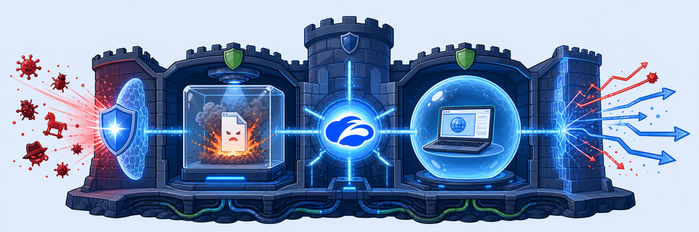
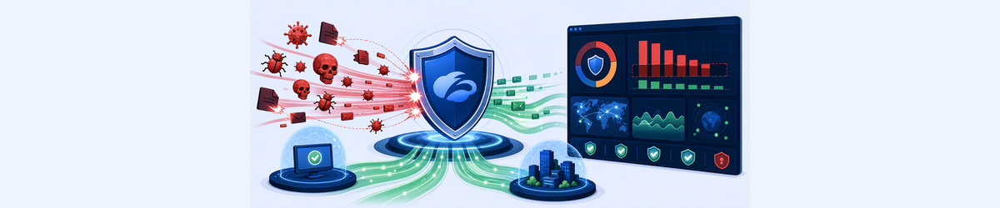
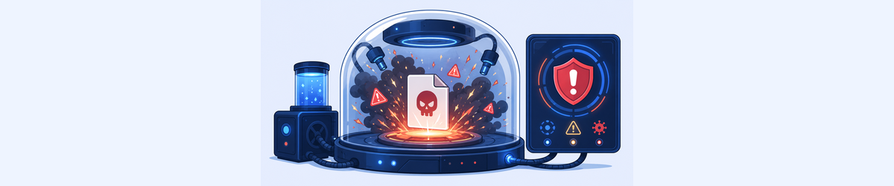
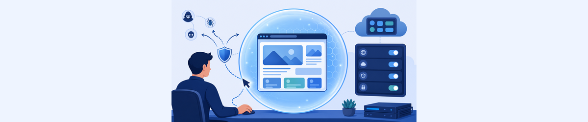
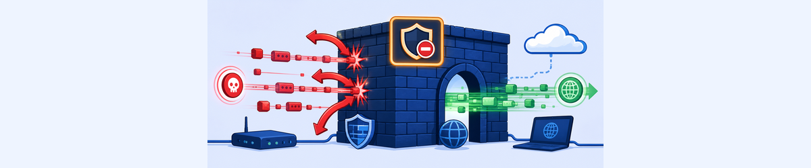
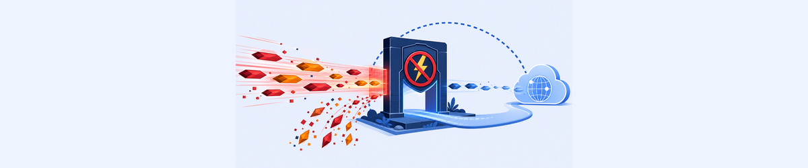
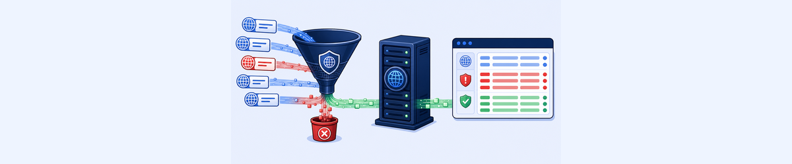

Lab 5: Troubleshooting Security Services
Scenario: You will verify that Zscaler’s security service stack is correctly configured. This includes threat protection policies, sandbox verdicts, Browser Isolation, the default Firewall block, QUIC blocking, and DNS control rules.

Six security layers means six potential misconfiguration points. Understanding why each layer exists — and what it can and can’t protect against — is more useful than memorising where each setting lives.
- The Sandbox has two actions: Quarantine First Time, Block Subsequent Downloads and Allow and Scan First Time, Block Subsequent Downloads. What’s the real-world tradeoff between choosing one versus the other for a catch-all rule?
- Zscaler’s best practice is to explicitly block QUIC via Firewall Control rather than relying on the default block rule. Why is this necessary for SSL inspection to work, and what protocol does the client fall back to?
- The Default Firewall Filtering Rule is set to Block/Drop for any traffic. If this rule didn’t exist, what would happen to non-web traffic (e.g. ICMP, SSH) flowing through Z-Tunnel 2.0?
Task 5.1: View Threat Protection Configurations & Risk Reports
1 Review Malware and Advanced Threat Protection Policies
- In the ZIA Admin portal, go to Policy > Malware Protection.
- Scroll through the settings and click Recommended Policy to compare the current settings against Zscaler’s recommendations. Note which protections have been enabled — these guard users against spyware, botnets, and malicious active content.
- Go to Policy > Advanced Threat Protection.
- Scroll through the settings and click Recommended Policy. Note the protections enabled — these guard against Command & Control Traffic, Malicious Sites, Fraud Protection, Phishing, Cryptomining, Tunneling, and Cross-Site Scripting (XSS).
- Under Suspicious Content Protection (PAGE RISK™), note the current Page Risk Score Index slider position. This score is calculated in real-time using injected scripts, vulnerable ActiveX, zero-pixel iFrames, and domain risk factors.
- Low Risk setting: high sensitivity — blocks anything even slightly suspicious
- High Risk setting: low sensitivity — allows users to access risky sites

Task 5.1: Check Sandbox Configuration
2 Review Sandbox Policy Rules
- In the ZIA Admin portal, go to Policy > Sandbox.
- Click the View icon (👁) for the Catch_All rule to view its settings.
- Note the File Types: 7-Zip, Adobe Flash, HTML Application, Java Applet, Microsoft Excel, Microsoft Word, PDF, ZIP, RAR, and many more
- Note the Action: Quarantine First Time, Block Subsequent Downloads with AI Quarantine enabled
- Explore other Sandbox policies — compare the Crowdstrike_Lab rule (Allow and Scan First Time) and the patient0_jeremy.peacock rule (also Allow and Scan). Note the difference in configured criteria and scoped users.
- Note the difference between Quarantine First Time and Block Subsequent Downloads vs. Allow and Scan First Time and Block Subsequent Downloads actions.
- Click Recommended Policy and review the suggested configuration.
Note: The Catch_All rule looks at many file types, applies to all users, and will Quarantine a previously unknown file before allowing it to be downloaded. This is the safest approach for broad user populations.
3 Review Sandbox Activity Report
- In the ZIA Admin portal, go to Analytics > Sandbox Activity Report.
- Explore the various graphs — check how many quarantined files were assessed as malicious.
- From the dropdown menu in the upper-left, select Sandbox Files found Malicious.
- Review the list of malicious files including their File Type and Threat Name. If no records appear for the current week, select a different timeframe.
- In the table, click the unique MD5 value for a malicious file and select View Sandbox Detail Report. Review the forensic report including MITRE ATT&CK techniques, virus and malware details, security bypass methods, networking activity, and persistence mechanisms.
Note: The Sandbox Detail Report provides forensic intelligence: which registry keys were changed, which network connections were initiated, and which files were read. Click the Expand icon on any widget for additional details.

Task 5.3: Check URL/Cloud App Isolate Control Policies
4 Verify Browser Isolation Configuration and Test It
- In the ZIA Admin portal, go to Policy > URL & Cloud Application Control.
- Click the Cloud App Control Policy tab.
- Identify the rule in the Consumer section that has Isolate configured as the action:
- Applications: Consumer / Online Shopping (IKEA, Best Buy, Wayfair, Costco, Macy’s, Lowe’s, Sam’s Club…)
- Action: Isolate Application Access
- Isolation Profile: TZTE Render Only
- On the Corp: Client PC, browse to
https://www.costco.comto test Cloud App control policies. - Verify that a Browser Isolation notification banner appears briefly at the top of the page: “Heads up, you’ve been redirected to Browser Isolation!”
- Note the effects of the TZTE Render Only isolation profile:
- Pages are rendered with a user-identifying watermark
- You cannot copy/paste or print
- Text input into the page is restricted
- A banner states: “You are accessing this webpage in read-only mode”
- To verify the isolation profile settings, go to Administration > Browser Isolation and locate the AI Render Only rule. Verify: Allow Printing = Disabled, Restrict Text Input = Enabled, Local Browser Rendering = Disabled.
- To understand Smart Browser Isolation, go to Policy > Secure Browsing and view the Smart Isolate tab. Note the Enable AI/ML based Smart Browser Isolation setting and the associated AI Render Only Browser Isolation Profile.

Task 5.4: Inspect Non-web Traffic Blocking by Default Firewall Block
5 Verify Default Firewall Block Rule
- In the ZIA Admin portal, go to Policy > Firewall Control.
- On the Firewall Filtering Policy tab, scroll to the bottom and verify:
- The last rule (highlighted in red) is: Default Firewall Filtering Rule — Criteria: Any — Action: Block/Drop
- Note the rules above the default that explicitly allow specific traffic:
- Rule 1: Block Malicious IPs and domains (Disabled in this lab)
- Rule 2: Zscaler Proxy Traffic — Allow
- Rule 3: Office 365 One Click Rule — Allow
- Rule 4: UCaaS One Click Rule (Zoom, Webex) — Allow
- Rule 5: Block QUIC — Block/Reset
- Rule 6: Recommended Firewall Rule (DNS, HTTP, HTTPS) — Allow
- Rule 7: Block Restricted Countries — Block/Drop
- To verify the default rule is blocking ICMP traffic, check the Firewall Insights logs:
- Go to Analytics > Firewall Insights > Logs tab
- Set Timeframe: Previous Month
- Click Add Filter, select Rule Name, and search for and select Default Firewall Filtering Rule
- Optionally add a filter for Network Service = ICMP
- Click Apply Filters and review the log entries showing ICMP traffic being Block/Drop’ed
Note: Rules like Office 365 One Click, Zscaler Proxy Traffic, and Recommended Firewall Rule explicitly allow very specific traffic needed for correct operation. ICMP and SSH traffic in this lab exercise will not match any of those rules and will fall to the Default rule (Block/Drop).

Task 5.5: Blocking QUIC Traffic as a Network Service
6 Verify QUIC Network Service and Firewall Rule
- Verify the QUIC network service definition:
- Go to Administration > Network Services (in the Resources section)
- Under the Services tab, search for
QUIC - Verify QUIC is configured to match UDP Destination Port 443
- Check the firewall rule that blocks QUIC:
- Go to Policy > Firewall Control and search on the Firewall Filtering Policy tab for the rule named Block QUIC
- Verify the configuration: Action: Block/Reset, Criteria: Network Services = QUIC
- Verify there are no preceding rules that would allow QUIC traffic to pass
- Click the View icon for the Block QUIC rule to see the full configuration and confirm:
- Services tab: Network Services = QUIC
- Action: Block/Reset
- Click Close.
Why block QUIC? QUIC is UDP-based (HTTP/3). When allowed, browsers bypass the Zscaler SSL inspection tunnel. Block/Reset forces the browser’s QUIC failsafe to engage, and the browser retries over HTTP/2 (TCP) — which Zscaler can inspect. Adding an explicit Block QUIC rule is recommended even when the Default rule blocks it, to ensure QUIC is always blocked regardless of future Default rule changes.

Task 5.6: Blocking Access to Restricted Sites with DNS Controls
7 Verify DNS Control Policy and Check DNS Insights Logs
- Check the configured DNS Control Policy rules:
- Go to Policy > Firewall > DNS Control
- Scroll or search for the rule named Block Gambling
- Verify the Action is set to Block for the Gambling Request and Response Categories
- [Optional] Click the View icon to see how the rule is configured
- Check the DNS Insights Analytics log entries to confirm policies are enforced:
- Go to Analytics > Insights > DNS Insights
- Click the Logs tab
- Set Timeframe: Previous Month
- Click Add Filter, select Rule Name, and select Block Gambling
- Click Apply Filters
- Review the DNS log entries — verify that
888.com(gambling site) shows Request Category: Gambling, Request Action: Block, Request Rule Name: Block Gambling.
Note: To send all DNS traffic (UDP, TCP, and DNS-over-HTTPS) to the Zscaler Cloud Firewall, ZCC traffic forwarding must use Z-Tunnel 2.0. This ensures DNS queries can be inspected and controlled.
